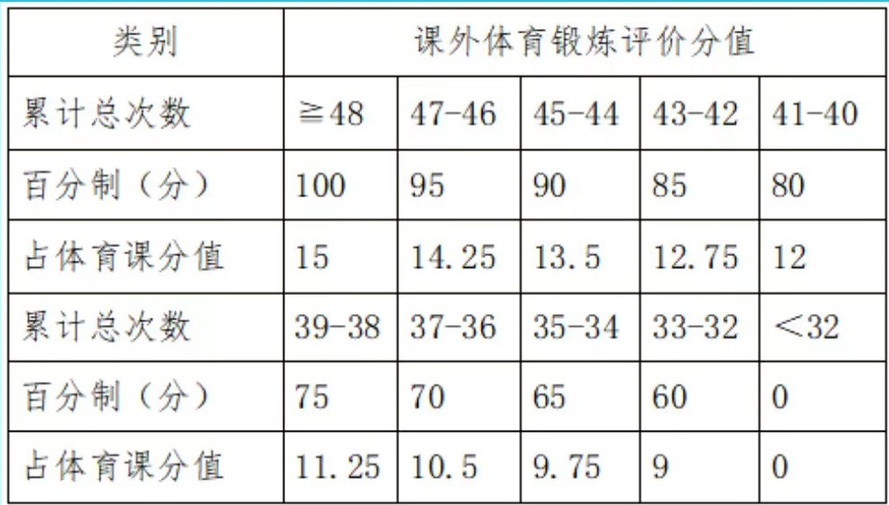
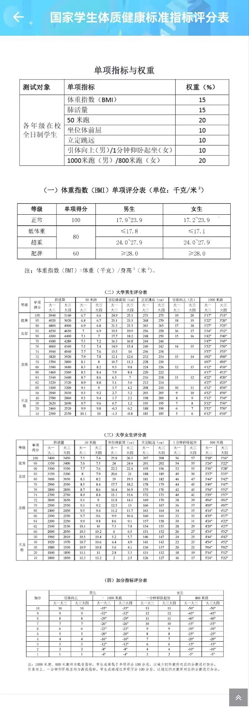
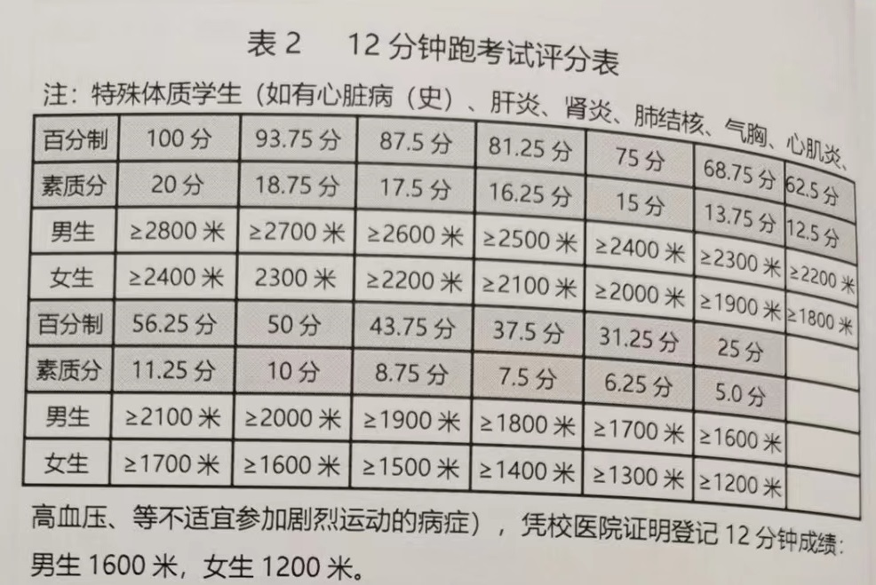

体育课程
伴随浙大学生整个大学生涯的课，有非常复杂的修读要求和考核方式，以下分段介绍。值得一提的是，体育课的分数在老师输入个部分数据后直接由系统计算得出，老师无法更改。
15%课外锻炼
通过浙大体艺APP打卡，具体分数和次数对照如下图。  获得打卡次数的方式有如下几个： + 在指定操场范围内跑步打卡，每天6：00-22：30可以打卡。男生要求3km，女生要求2km，要求总时间小于45min大于3min，且前3km（男）/2km（女）每公里配速小于10min/km。另外，未明确写出的规则有：每公里配速可略高于10min/km，具体以提交时系统判断为准；每公里配速不得少于3min/km，否则记作违规打卡。 + 在指定场馆进行场馆锻炼，每学期限12次，工作日打卡时间仅限18：30-22：30，周六周日仅限7：30-11：30和13：30-22：30。时间需大于30min小于120min，以刷闸机时间为准。场地包括风雨操场，安中网球场，游泳馆，健身房，银泉足球场等。 + 参加辅导站，每学期限6次，辅导站需在浙大体艺app中报名和签到。 + 参加院系组织的算打卡次数的活动，期末时由学院提交文件给公体部审核，审核通过后直接导入打卡次数。 打卡每天 仅限一次 （不考虑独立导入的院系打卡），由于审核时间的原因，同一天的跑步打卡会比场馆打卡优先计入。
25%身体素质
春夏学期这部分分数由体测成绩*25%得出（其中800m/1000m需在体育课上测试，其他科目在课外专门预约时间测试），秋冬学期则由20%的12分钟跑成绩和5%仰卧起坐/引体向上成绩构成。 体测标准如下图，秋冬学期的仰卧起坐/引体向上参照此标准。  12分钟跑标准如下图  12分钟跑是老师上课测的，按理是每百米需要有一个人记录，然后每两个人配对相互记录，不过有的老师可能记录比较松。
40%专项技能课考试
平常说的体育课选课也就是选专项技能课，下面简单介绍我上过的几门专项技能课 + 无线电测向：主要内容是通过测向机听电台判断方位，找到电台之后用打卡器进行打卡。考试分为两部分，第一部分是听台考试，即听到电台里的信息（数字和电台声音有个对照表）并记录，第二部分是实际考试，共进行3次，每次在所有参加考试的同学内按照成绩排名赋分，取最高的两次给分。由于布台范围比定向越野小，还算轻松不需要到处跑，不过也需要周末去华家池、玉泉考试。但是由于电台信号范围不大，因此考试很有随机性，可能某个电台不靠近根本听不到，由于是好几个班一起考的建议在人多的时候去考试，这样看哪里簇拥着一群人就是有打卡点。也可以当布台志愿者，不需要参加考试，只需负责帮同学记录成绩，且得分不错。 + 羽毛球（初级班）：羽毛球很好玩，考试很难。考核是发高远球，符合规则不出界不发错位的情况下按落地点给分，一共发十个，每个球满分10分。考核比较考验发挥，因为一个球出界10分（即总评4分）就没了。有一次统一的期末考，之后还有课内的补考，有的老师会在课内补考捞一捞人。 + 太极拳：上课就是学打一套拳（24式简化太极拳），个人感觉课程比较无聊。考核是和学院同学组队参加三好杯比赛打一套拳，小组得分（10分制）*4即为专项分，若同时参加太极扇比赛项目则专项分最低给36分，同时可通过参加辅导站，提交视频等方式加专项分，全部参加的话专项分基本可以给满。
10%专项课考勤
按规定，老师在系统内进行记录，记录为缺勤/早退-2分，记录为请假-1分（如果到场见习不扣分，有的老师请假会在系统内记录为正常到课，也不扣分）。请假两次算一次缺勤，缺勤三次则体育课总分 直接记为59分（挂科） 。
0%身体素质课考勤
大一两学期需选修身体素质课，无考试，但会倒扣体育课总评。记录为缺勤/早退-1分，记录为请假-0.5（如果到场见习不扣分，有的老师请假会在系统内记录为正常到课，也不扣分）。请假两次算一次缺勤，缺勤三次则体育课总分 直接记为59分（挂科） 。 我两学期选的两个老师抓考勤都挺严的，课程也挺累的。
10%专项课理论考试
大多数体育课的理论考试需要在特定时间到紫金港机房进行开卷机考，开卷题库可在这个cc98链接下载（如果里面没有说明你这门体育课是最近几年新开的，老师应该会发资料）。
另有少部分体育课无理论考，需要通过mooc等完成，具体以专项课课堂上说的为准。
另外，大一第一学期的课程统一不进行理论考，需要刷智慧树网课完成。
0%竞赛赋分
参与体育比赛（三好杯/趣味运动会等）可额外+2分
总分由上述成绩加总（每项成绩可能出现两位小数），四舍五入到整数得到。